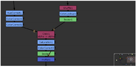

可以使用鼠标或显示在节点图右下角的导航器图进行平移。
用鼠标平移
要使用鼠标平移，请按下鼠标中键并将鼠标指针拖动到工作区上 (也可以使用 Alt 拖动)。脚本随指针移动。
注意:
在许多 Linux windows 管理器中,
Alt
默认情况下，key 用作鼠标修饰键。这可能会在 3D 应用程序中导致问题
Alt
用于 3D 环境中的相机导航。
可以使用键映射将鼠标修改器指定给另一个键，例如
 (超级或 Windows 徽标) 键，但是方法会根据您使用的 Linux 风味而改变。有关更多信息，请参考特定 Linux 发行版的密钥映射文档。
(超级或 Windows 徽标) 键，但是方法会根据您使用的 Linux 风味而改变。有关更多信息，请参考特定 Linux 发行版的密钥映射文档。
用地图平移
如果您的脚本大于可见工作区，导航器地图会自动出现在右下角。

地图显示了整个脚本的微型视图，粉红色矩形显示了您在工作区边界内看到的脚本部分。
要使用地图进行平移，请拖动粉红色矩形以平移到脚本的不同视图。
当整个脚本包含在窗口边框中时，地图会自动消失。
提示: 导航地图可调整大小。拖动它的左上角，使其尽可能大或小。